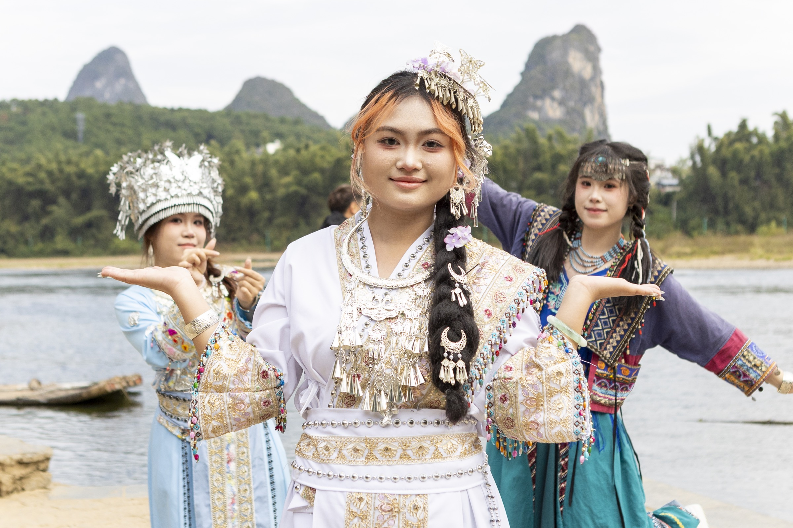
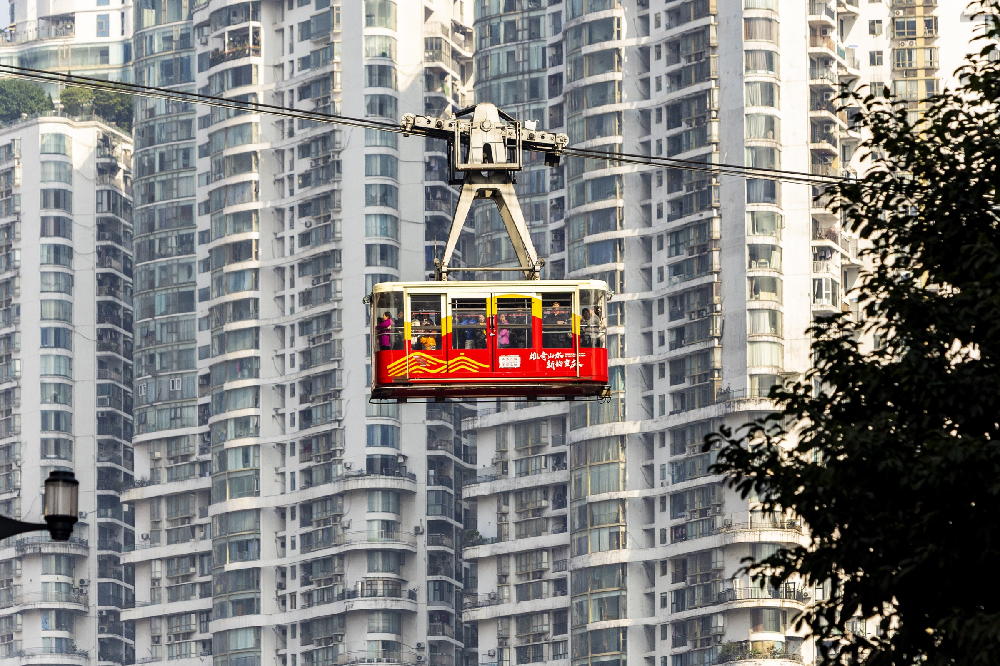
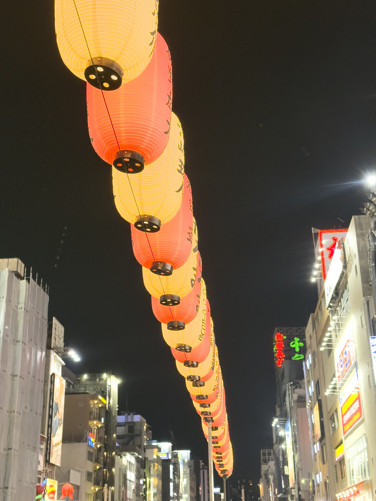
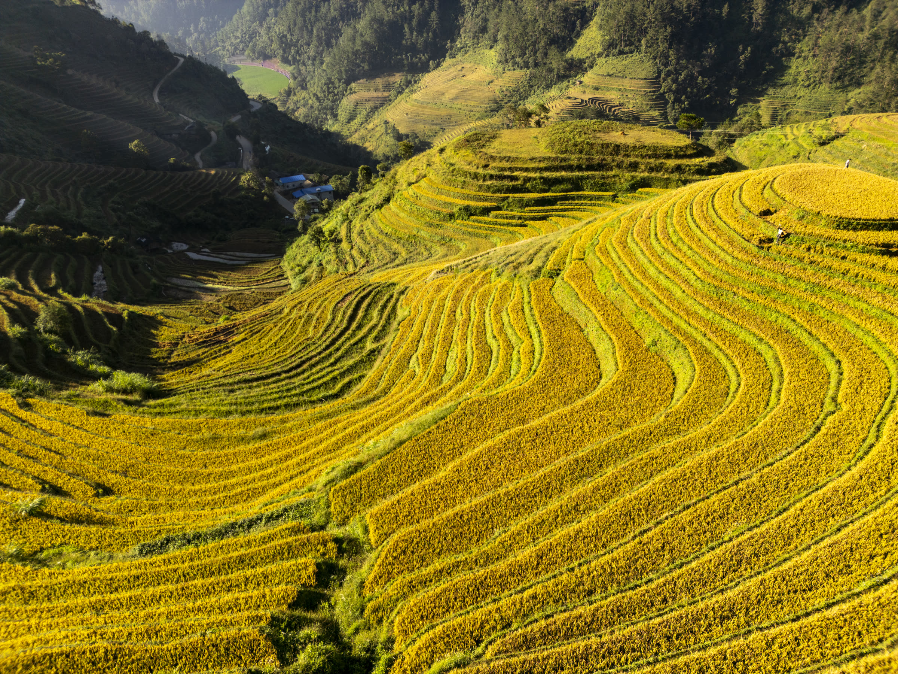
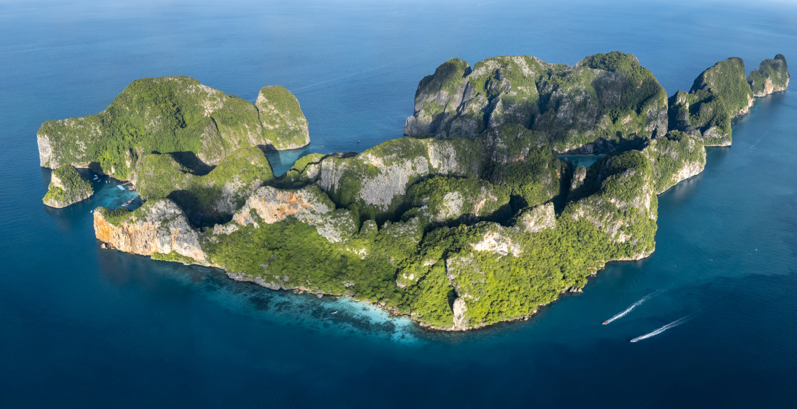
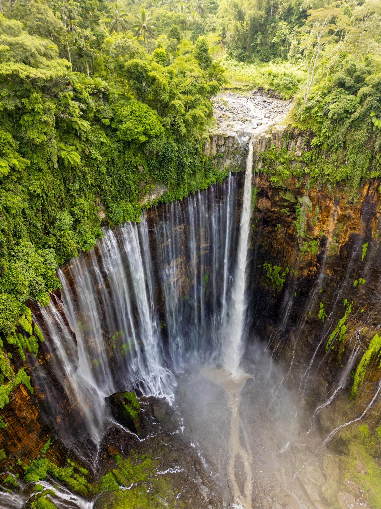
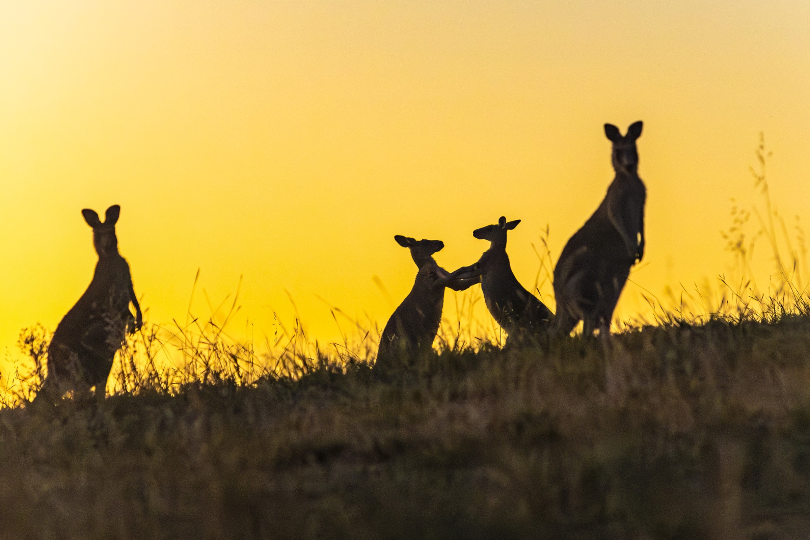
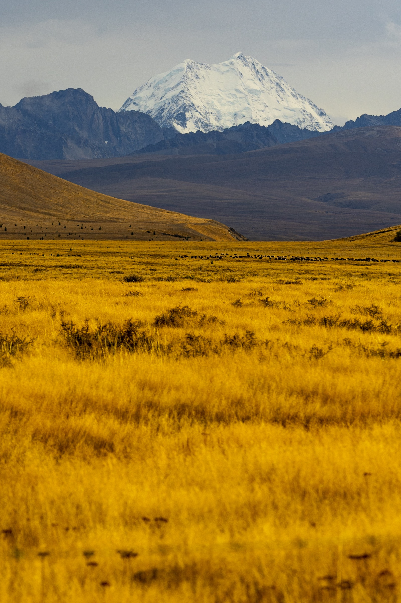
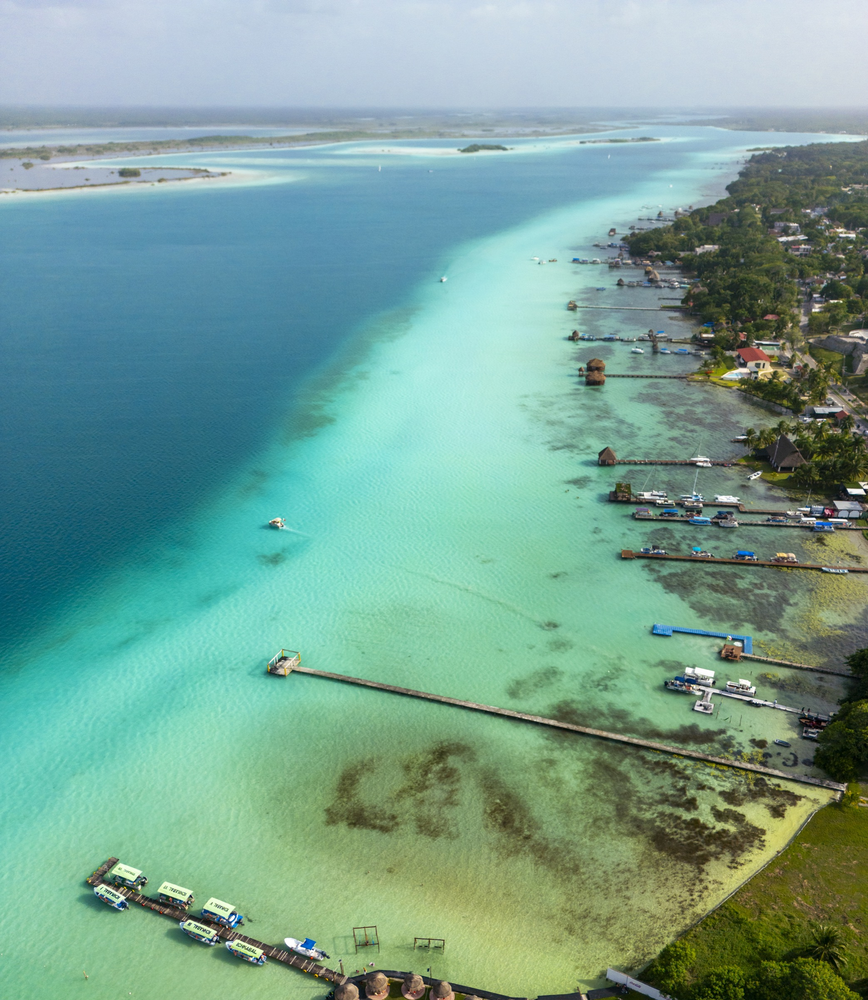
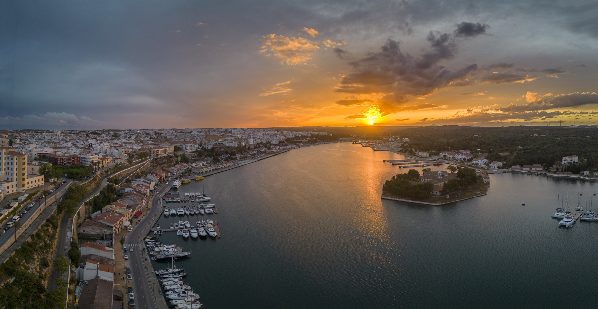

01 / THE JOURNEY
Promote an itinerary
Show the route as a whole: the landscapes, people, cultural encounters and places to stay that distinguish the experience.

A GLOBAL PHOTOGRAPHY & FILM PROPOSAL
New photography and film for the places, people and experiences that make Abercrombie & Kent journeys distinctive.
EXPLORE THE DESTINATIONS ↓THE OPPORTUNITY
From cultural encounters in Asia to the wilderness of Australia and the food and landscapes of northern Spain, A&K’s journeys offer countless stories to tell.
I’m Juan Aizpuru, a photographer and filmmaker based in Bilbao. I have travelled and photographed across these destinations. Together with your teams and local guides, I would create new material around the journeys you want to promote.
EXPLORE THE PROPOSAL
A selection of destinations in A&K’s offering, illustrated with photographs from my travels.

DESTINATION 01 / CHINA
Ancient heritage. A changing world.
A&K’s China journeys connect Beijing, Xi’an, Chengdu and Shanghai, with options that explore Yunnan and the Yangtze.
Create a visual story that connects historic places and living culture with contemporary cities, carefully chosen stays and the people who open doors along the way.

DESTINATION 02 / JAPAN
Tradition and modern life.
A&K’s Classic Japan itinerary brings together Tokyo, Hakone, Osaka, Nara and Kyoto.
A production could follow the rhythm of a journey through Japan: architecture and food, private cultural experiences, refined stays and the landscape between cities.

DESTINATION 03 / VIETNAM
A journey told through its people.
A&K’s Southeast Asia journeys include Hanoi, Ha Long Bay and Ho Chi Minh City, alongside destinations in neighbouring countries.
Create imagery around the markets, cuisine, waterways, local hosts and stays that give a Vietnam journey its character, working with A&K’s local team.

DESTINATION 04 / THAILAND
A sense of place, from city to coast.
Bangkok features in A&K’s Southeast Asia journeys; Thailand is also part of its wider travel offering.
Show the contrast between vibrant city experiences, local gastronomy and island landscapes through new photography and film tailored to the journeys you select.

DESTINATION 05 / INDONESIA
Islands, culture and extraordinary landscapes.
A&K’s international itineraries include Bali and the island of Rinca, among other destinations.
Document island landscapes, local culture and selected stays with a production designed around the exact islands and experiences A&K wishes to promote.

DESTINATION 06 / AUSTRALIA
Wildlife, wilderness and exceptional stays.
A&K’s Australia itineraries combine landscapes, wildlife, food and wine, and stays across the country.
Bring together wildlife, coast, wide-open landscapes and hospitality in a cohesive visual collection for a selected itinerary or campaign.

DESTINATION 07 / NEW ZEALAND
A landscape worth travelling for.
Wonders of New Zealand includes Auckland, Rotorua, Wellington, Kaikōura, Christchurch and Queenstown.
Create a visual account of the journey, combining landscapes and outdoor experiences with carefully chosen food, local hosts and places to stay.

DESTINATION 08 / MEXICO
Nature, culture and a sense of discovery.
A&K’s Mexico journeys include Mexico City and the Yucatán Peninsula, including Mérida and Sisal.
Develop a campaign that connects nature, local culture and exceptional hospitality, built around the experiences and destinations that matter to A&K.

DESTINATION 09 / SPAIN
Closer to home. Made for discovery.
A&K’s Spain and Portugal journeys include Bilbao and Elciego; its wider programmes also feature Mediterranean destinations.
Based in Bilbao, I can work closely with your team to photograph the food, local expertise, stays and landscapes behind an itinerary in northern Spain or elsewhere.
A FLEXIBLE CREATIVE PARTNERSHIP
01 / THE JOURNEY
Show the route as a whole: the landscapes, people, cultural encounters and places to stay that distinguish the experience.
02 / THE ASSETS
New photography and film for your team and travel partners to use across websites, presentations, brochures and campaigns.
03 / THE CAMPAIGN
When needed, we can develop the creative concept and produce a complete campaign, adapted to your markets and objectives.
MEET AT FITUR 2027
I would love to learn which journeys and markets you want to promote. We can define the locations, production time and final material together, with usage rights agreed for the project.